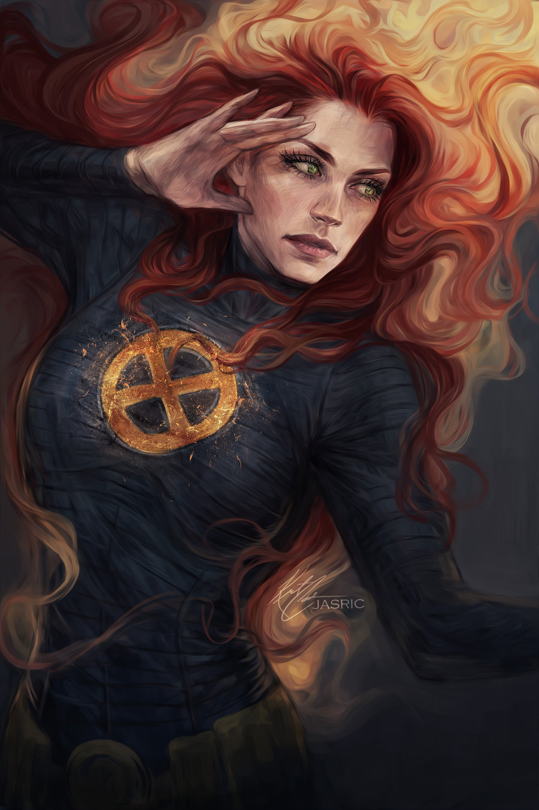

Teodora Maros
Datum rođenja: 15.Prosinac.2003
Mjesto rođenja: Livno
Obrazovanje:
Završena: Osnovna Škola Ivan Goran Kovačić
Pohađam: Srednju Strukovnu Školu Silvije Strahimir Kranjčević
Smjer: Web dizajn
Jezici:
Hrvatski jezik ⭐ ⭐ ⭐ ⭐ ⭐
Engleski jezik ⭐ ⭐ ⭐ ⭐
Njemački jezik ⭐
Vještine:
Slaganje rubikove kocke 3x3 i 2x2
Rad u Photoshopu
Izrada web stranica